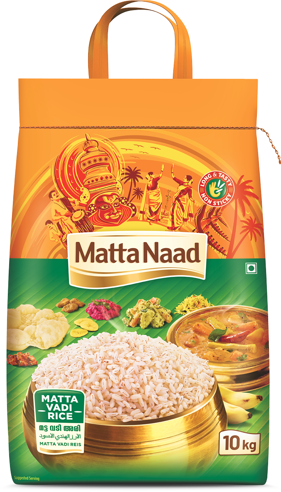
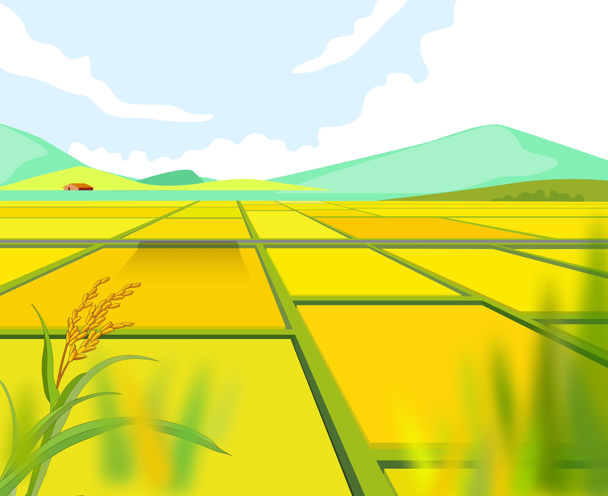
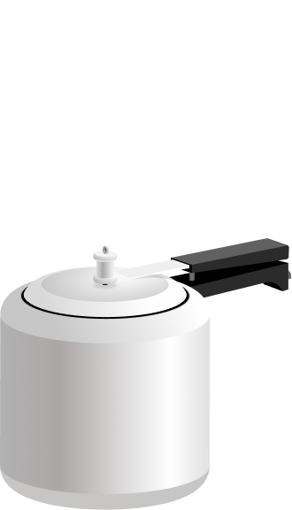

You have reached MattaNaad!
Our products
Matta Vadi Rice
2kg
Matta Vadi Rice
5kg
Matta Vadi Rice
10kg


HOW TO COOK

PRESSURE COOKER
We take time and effort to accurately review everything about your business and your industry.
GENTLE POT
We take time and effort to accurately review everything about your business and your industry.
RICE COOKER
We take time and effort to accurately review everything about your business and your industry.